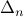
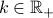
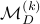
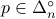
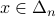
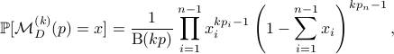
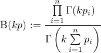

Privacy in Autonomous Systems
Privacy verification and enforcement in autonomous systems
 |
Abstraction and symbolic approach
Control-theoretic approach with barrier certificates
|
 |
Publication:
Control Theory Meets POMDPs: A Hybrid Systems Approach
M. Ahmadi, N. Jansen, B. Wu, and U. Topcu. Submitted to IEEE Transactions on Automatic Control, (full paper), under review, 2019.
Privacy Verification and Enforcement via Belief Abstraction
B. Wu and H. Lin. IEEE Control Systems Letters with CDC option, vol. 2, no. 4, pp. 815-820, 2018.
Privacy Verification in POMDPs via Barrier Certificates
Mohamadreza Ahmadi, B. Wu, H. Lin, and U. Topcu. Decision and Control (CDC), 2018 IEEE 57th Annual Conference on, pp. 5610-5615, 2018.
Synthesis of Insertion Functions to Enforce Decentralized and Joint Opacity Properties of Discrete-event Systems
B. Wu, J. Dai, and H. Lin. American Control Conference (ACC), pp. 3026-3031, 2018.
Parameter and Insertion Function Co-synthesis for Opacity Enhancement in Parametric Stochastic Discrete Event Systems
B. Wu, Z. Liu, and H. Lin. American Control Conference (ACC), pp. 3032-3037, 2018.
|
A new differential privacy machanism for data in probability simplex
 |
The system model and control policy may also need to be kept private for reasons like intellectual property rights or being abused by malicious parties. For many autonomous systems, both the model and policy are in the forms of probabilistic distributions that belong to unit simplex, where classical differential privacy based on additive noise privacy mechanisms are ill-suited.
One contribution of this project is to present a differentially private mechanism that, without any need of projection, maps elements of  to . In order to do so, we first introduce the Dirichlet mechanism. A Dirichlet mechanism with parameter , denoted by , takes as input a vector  and outputs  according to the Dirichlet probability distribution function (PDF) centered on  , i.e., , i.e.,

where

is the multi-variate beta function.
Publication:
The Dirichlet Mechanism for Differential Privacy on the Unit Simplex
P. Gohari, B. Wu, M. Hale, and U. Topcu. In preparation, 2019.
The Dirichlet Mechanism for Differential Privacy on the Unit Simplex
P. Gohari, B. Wu, M. Hale, and U. Topcu. Submitted to American Control Conference, 2020, (Invited Paper).
|
|